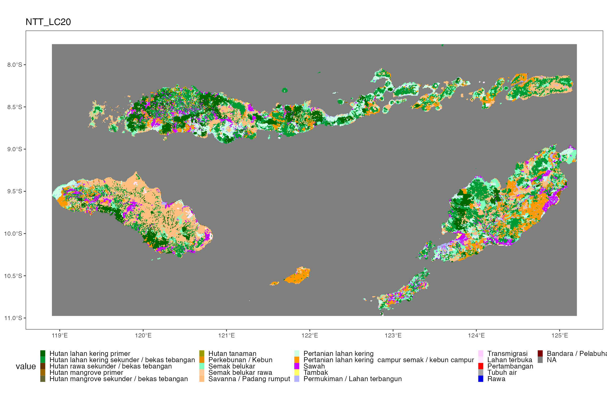

Pre-QUES
Pre-QUES.RmdPreQUES-Land Use Change Analysis
Bagaimana Analisis Ini Bekerja?
Peta tutupan lahan dari dua periode waktu: Analisis perubahan lahan dimulai dengan membandingkan data peta tutupan lahan dari dua periode waktu yang berbeda. Ini memberikan gambaran tentang bagaimana lahan di suatu daerah berubah sepanjang waktu.
Mengintegrasikan peta Unit Perencanaan: Data unit perencanaan kemudian dimasukkan dalam proses ini. Ini memungkinkan kita untuk melihat kecenderungan perubahan tutupan lahan pada masing-masing kelas unit perencanaan.
Mengapa Analisis Ini Penting?
Hasil dari analisis ini berperan penting dalam proses perencanaan untuk berbagai aspek pembangunan. Berikut adalah beberapa aplikasinya:
Menentukan Prioritas Pembangunan: Dengan memahami pola dan tren perubahan lahan, kita bisa menentukan area mana yang harus diberi prioritas dalam pembangunan.
Mengidentifikasi Faktor Pemicu: Analisis ini membantu kita dalam mengidentifikasi faktor pemicu yang mempengaruhi perubahan penggunaan lahan.
Perencanaan Skenario Masa Depan: Memahami perubahan masa lalu dan saat ini memungkinkan kita untuk merencanakan skenario pembangunan masa depan.
1. Data yang digunakan
Berikut adalah komponen data yang digunakan dalam analisis perubahan lahan:
Peta Penggunaan Lahan: Ini adalah sumber utama informasi yang menunjukkan pola dan distribusi penggunaan lahan di suatu area.
Peta Unit Perencanaan Daerah: Sebagai petunjuk dari area perencanaan, peta ini digunakan untuk menunjukkan bagaimana lahan direncanakan untuk digunakan dan dikembangkan.
Tabel Acuan Tipe Penggunaan Lahan: Tabel ini memberikan klasifikasi terperinci tentang berbagai tipe penggunaan lahan.
Tabel Acuan Kelas Unit Perencanaan: Ini membantu kita memahami klasifikasi dan karakteristik dari unit-unit perencanaan yang berbeda.
#> SpatRaster resampled to ncells = 500820
#> SpatRaster resampled to ncells = 500820

2. Hasil analisis pada tingkat bentang lahan


3. Hasil analisis pada tingkat unit perencanaan
pu_names <- crosstab_result %>%
pull(Kabupaten) %>% unique()
results_list <- purrr::map(pu_names,
~ lcc_summary_by_pu(crosstab_tbl = crosstab_result,
pu_column = "Kabupaten",
pu_name = .x,
sankey_area_cutoff = 1000,
n_top_lcc = 10))
#> Selecting by Freq
#> Selecting by Freq
#> Selecting by Freq
#> Selecting by Freq
#> Selecting by Freq
#> Selecting by Freq
#> Selecting by Freq
#> Selecting by Freq
#> Selecting by Freq
#> Selecting by Freq
#> Selecting by Freq
#> Selecting by Freq
#> Selecting by Freq
#> Selecting by Freq
#> Selecting by Freq
#> Selecting by Freq
#> Selecting by Freq
#> Selecting by Freq
#> Selecting by Freq
#> Selecting by Freq
#> Selecting by Freq
#> Selecting by Freq
results_list <- set_names(results_list, pu_names)